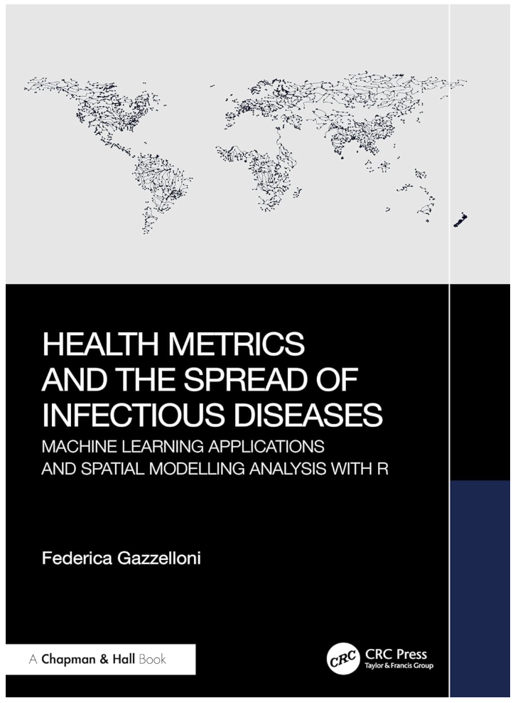

Blog
A space for sharing fresh content, personal reflections, and valuable insights on topics spanning data visualization, data analytics, and beyond.
AI-first analytics · health metrics · R workflows
I design analytical workflows that combine AI, statistics, R, and health metrics to turn complex data into practical decisions.
Work with me Consulting and training through DataMetricus.

Featured book · CRC Press · 2025
Learn to calculate health metrics, apply machine learning, and explore spatial patterns with practical R examples.
Available in print from Routledge. Read about the writing journey.
Subscribe for the latest tutorials and insights in Data Science and R Programming!
Latest content